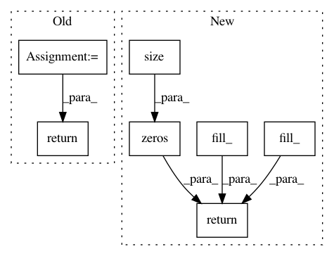

5a2f76ede044b4904af9461e18253f2929cfc5a4,fairseq/models/levenshtein_transformer.py,LevenshteinTransformerModel,initialize_output_tokens,#LevenshteinTransformerModel#Any#Any#,435
Before Change
*initial_output_tokens.size()
).type_as(encoder_out["encoder_out"])
initial_attn = None
if getattr(self.decoder.layers[-1], "need_attn", False):
initial_attn = initial_output_tokens.new_zeros(
src_tokens.size(0), 2, src_tokens.size(1)
)
return {
"output_tokens": initial_output_tokens,
"output_scores": initial_output_scores,
"attn": initial_attn,
}
class LevenshteinTransformerDecoder(TransformerDecoder):
def __init__(self, args, dictionary, embed_tokens, no_encoder_attn=False):
After Change
def initialize_output_tokens(self, encoder_out, src_tokens):
initial_output_tokens = torch.cat(
[
torch.zeros(src_tokens.size(0), 1).fill_(self.bos),
torch.zeros(src_tokens.size(0), 1).fill_(self.eos),
],
1,
)
initial_output_scores = torch.zeros_like(initial_output_tokens).to(
encoder_out[0]
)
initial_attn = torch.empty([0])
if getattr(self.decoder.layers[-1], "need_attn", True):
initial_attn = torch.zeros([src_tokens.size(0), 2, src_tokens.size(1)]).to(
initial_output_tokens
)
return [initial_output_tokens, initial_output_scores, initial_attn, 0, 0]
class LevenshteinTransformerDecoder(TracingTransformerDecoder):
def __init__(self, args, dictionary, embed_tokens, no_encoder_attn=False):
In pattern: SUPERPATTERN
Frequency: 3
Non-data size: 7
Instances
Project Name: elbayadm/attn2d
Commit Name: 5a2f76ede044b4904af9461e18253f2929cfc5a4
Time: 2019-10-23
Author: dnn@fb.com
File Name: fairseq/models/levenshtein_transformer.py
Class Name: LevenshteinTransformerModel
Method Name: initialize_output_tokens
Project Name: rusty1s/pytorch_geometric
Commit Name: d7bd8bca1dd54a8255afffb462b84c8b9c3b7eca
Time: 2017-10-25
Author: matthias.fey@tu-dortmund.de
File Name: torch_geometric/nn/functional/spline_gcn/edgewise_spline_weighting_cpu.py
Class Name: _EdgewiseSplineGcn
Method Name: backward